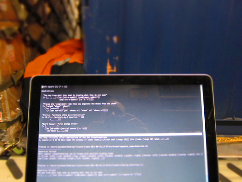

Programming Languages

{kind=link}
Today I am inspired to ponder many languages at once and review which ones I use regularly, which ones I’m curious about, which ones I avoid, and what I’d like to use, if it were to exist.
Programming Languages I Use Regularly
Python
By far the language I use most for work. I like it for its clean philosophy, its expressiveness, its “batteries included” extensive set of libraries, and, first and foremost, for its readability.
C
Of all the languages I use regularly, C is the one I learned first. I maintain a large Linux kernel device driver I wrote for the IceCube project as well as an embedded system written for 5000+ sensors designed for the same.
C now feels like assembly language to me but I still appreciate its power and elegance.
Clojure
I have dabbled in Lisp since the 1980s but not seriously until recently. Somewhat seduced by Paul Graham’s essays on Lisp and encouraged by a bit of a Lisp renaissance, I have started reading up on Clojure and working through problems on 4clojure.com. While not without its warts, I like many things about Clojure, including the Lisp “code-as-data” philosophy, availability of macros (something I wish Python had) and its interoperability with Java classes. While I doubt I’ll be able to use this in my paying work any time soon, I have started playing with Clojure for personal projects.Having to deal with significantly concurrent systems in my work, I am intrigued by functional programming, as opposed to the usual object-oriented approaches where state is king and where tangled hierarchies of relatively meaningless relationships can obscure intentSee S. Yegge, The Kingdom of the Nouns.. Clojure takes an interesting approach, with its emphasis on immutability, software-transactional memory and other concurrency primitives.
Bash / Unix Tools
It amuses me slightly to include bash here, but combining simple iteration with conditional statements and adding basic Unix concepts and tools such as pipelines, grep, awk, sed, wc, etc. is surprisingly powerful. Every small Bash trick or new tiny-Unix-tool I learn seems to eliminate the need for some number of actual programs, at least for quick-and-dirty work. The results tend to be obscure and hard to parse; if I can do something in a single line of bash, I will; otherwise I’ll resort to Python for most things.
Javascript / Coffeescript
Not my favorite language by any stretch, but you can’t avoid it if you’re working in the browser (I don’t consider closed-source Flash an option). The language has a lot of warts, but some good parts too. I can feel the Lisp bones deep underneath the surface of the language when I dive into JavaScript. CoffeeScript is sweet because it’s so much more readable and offers protection from common JavaScript gotchas, but has some flaws of its own.
Programming Languages I Have Used in the Past but Tend to Avoid
Perl
I fell in love with the power of Perl (“the duct-tape of the Internet”) back in the 1990s, but now dislike its strange, ad-hoc syntax and the relative inscrutability when compared to Python.
Java
I haven’t done a ton of Java development, but have done enough to be irritated by certain things about it: its extremely verbose syntax, strict typing, distance from the actual hardware, and lack of (at least until now) anonymous functions (“lambda”). Also the JVM startup time is irritating, a problem Clojure inherits from Java (though there are workarounds).
Java has become so ubiquitous, however, that it’s hard to avoid, and it does have a certain self-consistent habitability to it. I think current JVM languages such as Clojure and Scala will only strengthen the role of Java and the JVM in modern computing, unless Oracle massively screws things up.
C++
Another language I’ve played with a bit. A language that splits the difference between C and Java (I realize C++ came before Java); I would prefer to write in a “real” higher level language and glue C in where needed.
FORTRAN
I’m sorry to say that, coming from physics, I’ve written more FORTRAN code than I care to admit. I find it interesting, however, that while Lisp and FORTRAN are almost the same age, Lisp still holds interest where FORTRAN does not (except to pure number-crunchers, due to ancient and venerable numeric libraries).
Languages I’m Curious About But Haven’t Had Time to Look At Much
Exposure to purely functional programming and lazy evaluation in Clojure made me curious about Haskell.
I am curious about Erlang, which is supposed to have excellent concurrency features.
I saw some talks about Go at OSCON. Go looks like it has some really nice features compared to C (compilation speed, concurrency support, and improved readability), but it may be a bit low-level for my interests.
I have only tinkered with Objective-C, but that is the language of choice for serious Mac OS X or iOS development. Its syntax looks pretty odd, but perhaps that’s a small price to pay for running on all that pretty hardware.
Purely logical languages such as Prolog (equivalents of which can be easily implemented in Lisp) are of interest for their ability to process large amount of semantically-related content. I’m curious about expert systems, ontologies, the Semantic Web, and many other related areas of AI research.
The Language I Wish Existed
The perfect language would:
- Be very readable, like Python (whitespace or other visual cues probably playing a significant role)
- Support full Lisp-like macros (“homoiconicity”)
- Have very broad library support (Python, Java, …)
- Have built-in features in support of test-driven
development (Python’s doctests and Clojure’s
:testmetadata seem like just the beginning of what might be possible) - Handle concurrency very well (Clojure, Erlang, … but not Python)
- Run in the browser, or be implemented efficiently on top of JavaScript
- Allow you to get very close to the machine if necessary, or at least the bytecodes of the virtual machine or interpreter (Python, C, C++, …)
Points 1-3 are the most important to me. Resolving the tension between points 1 and 2 is of particular interest.
I doubt such a language will come along any time soon. But I’m taking a class next month which, who knows? … might help someday.